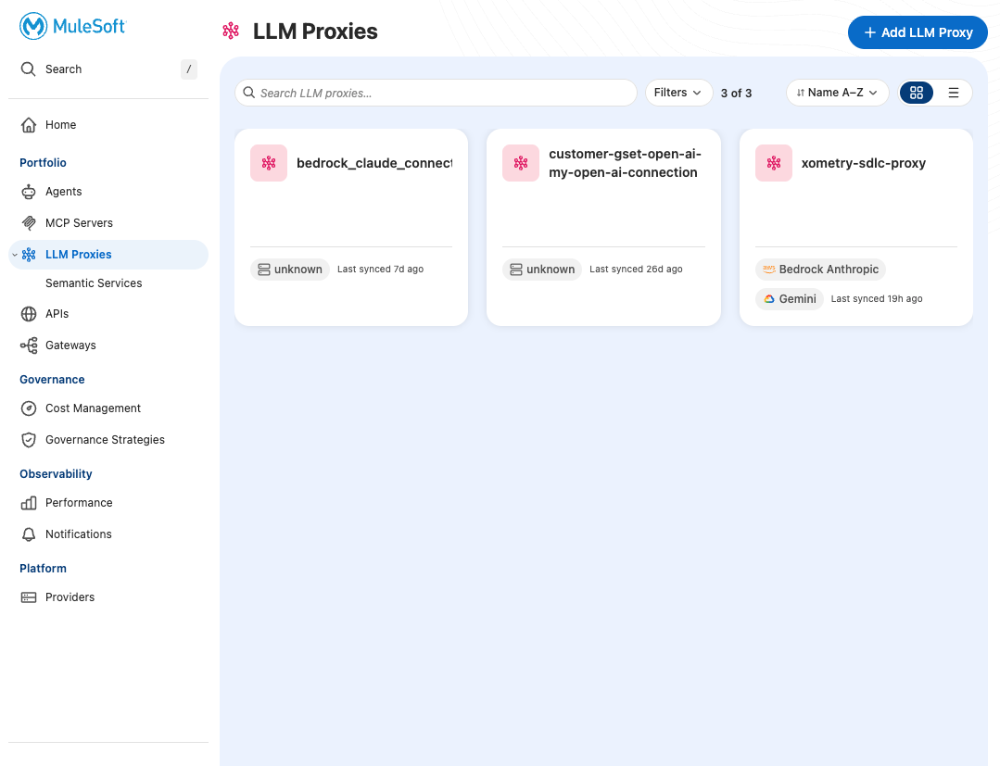
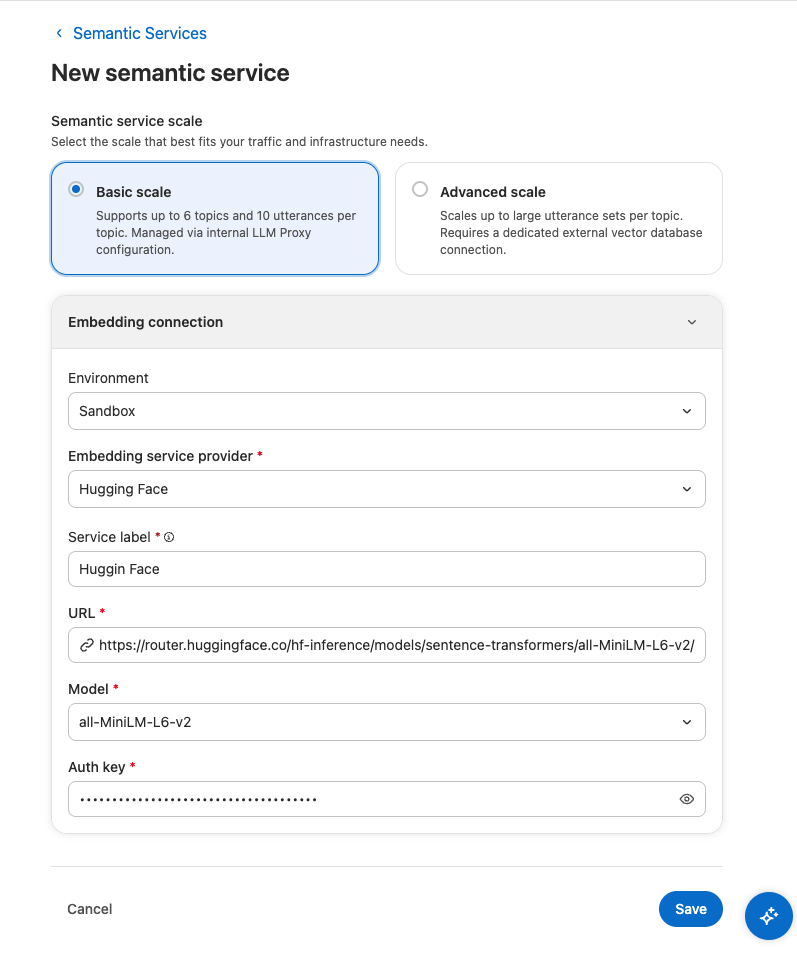
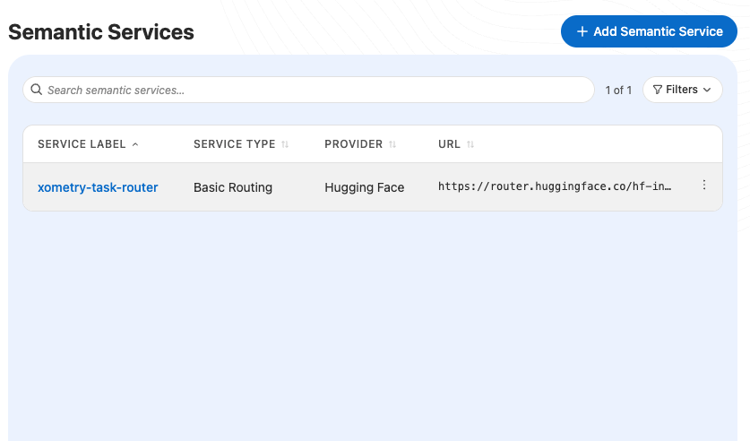
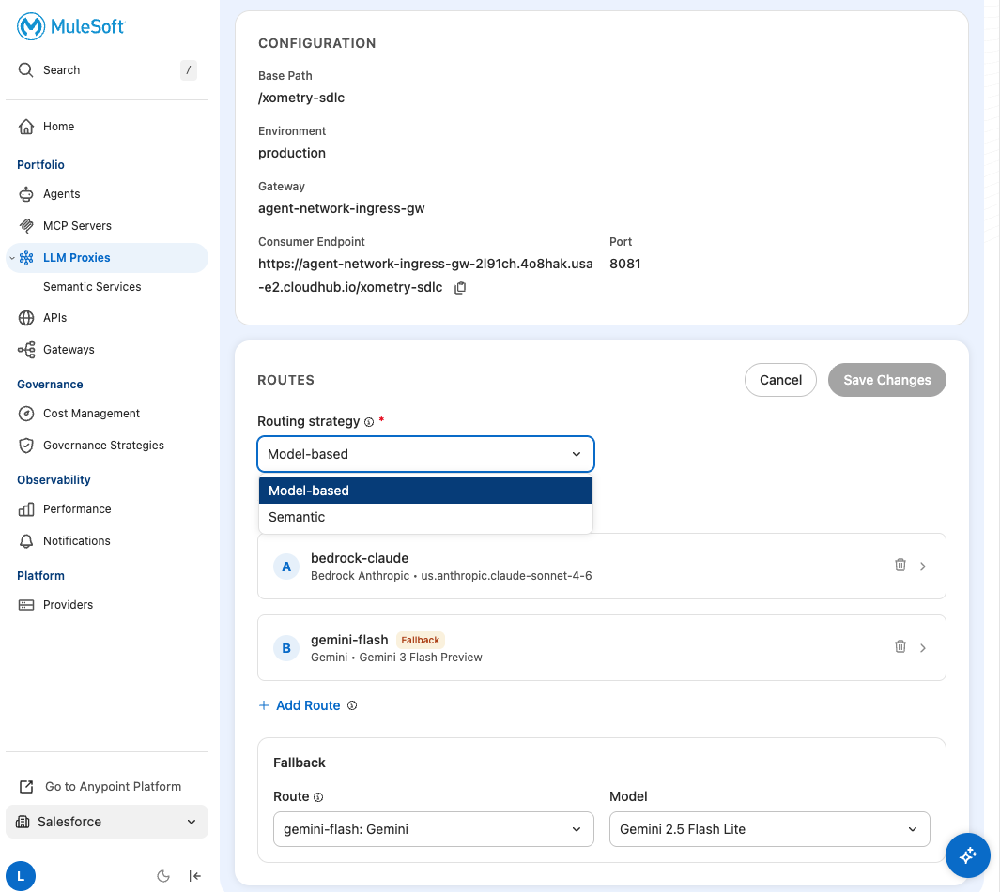
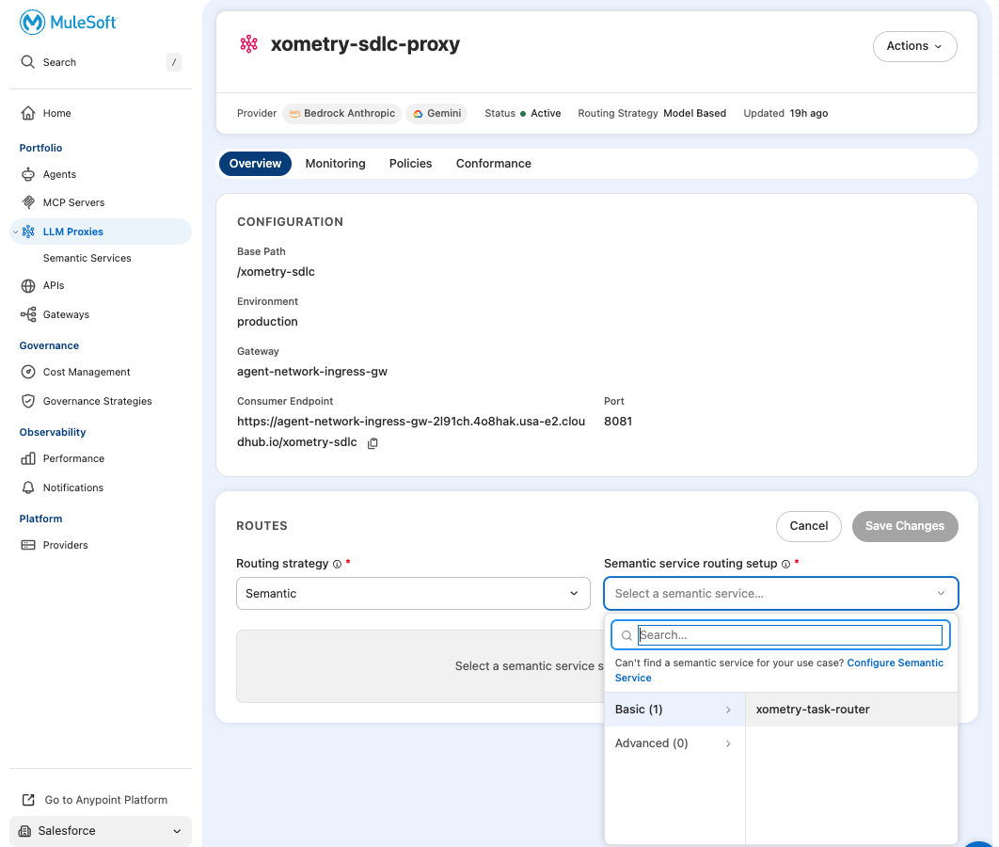
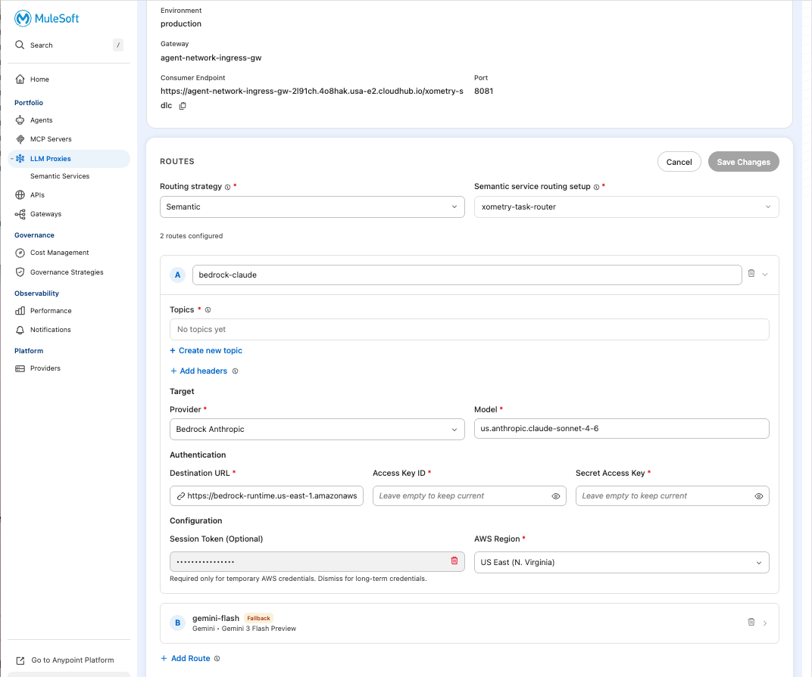
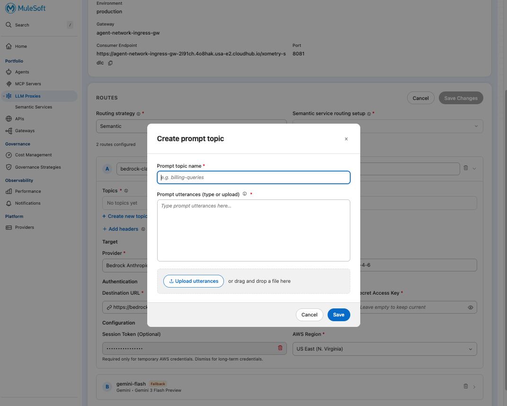
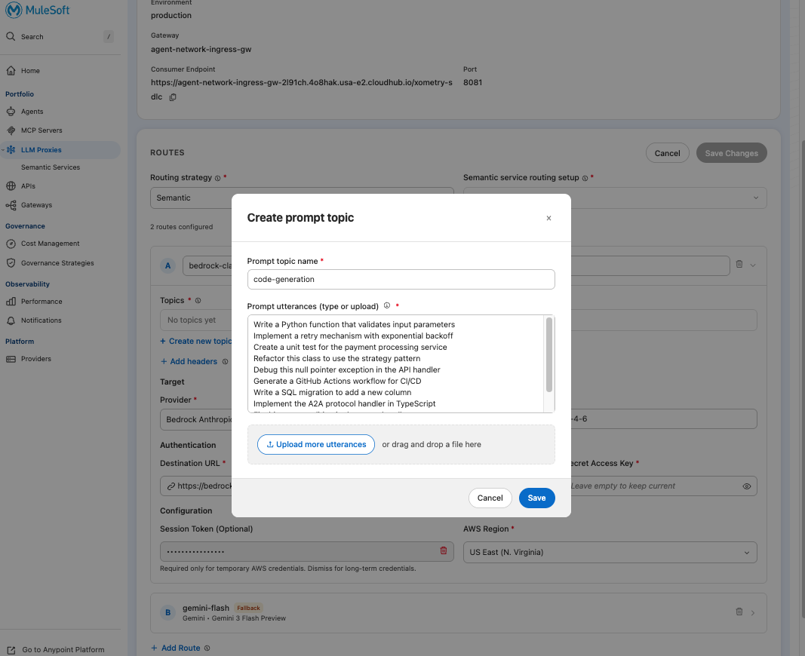

Lab 3: Semantic Routing Strategy
Let the proxy automatically classify prompts and route to the right model
Overview
In Lab 2, developers chose the model and the proxy routed to the right provider. Now we remove that decision entirely — the proxy classifies the prompt and routes automatically.
Business scenario: Your platform team doesn't want developers thinking about which model to use. "Write code" should route to Claude (expensive, powerful). "Summarize this" should route to Gemini Flash (cheap, fast). The proxy makes the call — developers just send prompts.
Jeff Arbor's team went from $500K to $3M in token spend. Some of that is legitimate code-generation work. Some of it is summaries and triage that could run on a model 10x cheaper. Semantic routing catches the latter automatically.
How Semantic Routing Works
The developer never specifies a model. The proxy:
- Sends the prompt to an embedding model
- Compares the embedding to trained topics
- Routes to the matching backend
Step 1: Create the Semantic Service
- Log into Anypoint Platform
- Navigate to Agent Fabric → LLM Proxies → Semantic Services (left nav)
- Click + New semantic service

Step 2: Configure the Semantic Service
- Select Basic scale (supports up to 6 topics, 10 utterances per topic)
- Configure the embedding connection:
| Field | Value |
|---|---|
| Environment | Sandbox |
| Embedding service provider | Hugging Face |
| Service label | xometry-task-router |
| URL | https://router.huggingface.co/hf-inference/models/sentence-transformers/all-MiniLM-L6-v2/pipeline/feature-extraction |
| Model | all-MiniLM-L6-v2 |
| Auth key | (provided by instructor) |

- Click Save changes to create the service

Step 3: Switch LLM Proxy to Semantic Routing
- Navigate to LLM Proxies →
xometry-sdlc-proxy - Click Edit Configuration
- Under Routing strategy, change from
Model-basedtoSemantic

- Under Semantic service routing setup, select
xometry-task-router

You'll now see the routes with "No topics yet" — topics are created per-route.

Step 4: Create Topic 1 — Code Generation
This topic catches prompts that should route to the expensive, powerful model.
- Expand the bedrock-claude route
- Click + Create new topic
- Configure:
| Field | Value |
|---|---|
| Prompt topic name | code-generation |
- Add sample utterances (these train the classifier):
Write a Python function that validates input parameters
Implement a retry mechanism with exponential backoff
Create a unit test for the payment processing service
Refactor this class to use the strategy pattern
Debug this null pointer exception in the API handler
Generate a GitHub Actions workflow for CI/CD
Write a SQL migration to add a new column
Implement the A2A protocol handler in TypeScript
Fix this race condition in the async handler
Write a DataWeave transformation for this JSON

- Click Save
Step 5: Create Topic 2 — Documentation & Triage
This topic catches prompts that should route to the cheap, fast model.
- Expand the gemini-flash route
- Click + Create new topic
- Configure:
| Field | Value |
|---|---|
| Prompt topic name | documentation-triage |
- Add sample utterances:
Summarize the changes in this pull request
Write a README for this microservice
Classify this bug report by severity
Generate release notes from these commit messages
Explain what this code does in plain English
Triage this incoming support ticket
Draft a response to this code review comment
Create a JIRA ticket description from this Slack thread
Summarize the key changes in sprint 47
Write a one-paragraph description of this feature- Click Save
Step 6: Configure Fallback Threshold
The Hugging Face all-MiniLM-L6-v2 model produces lower confidence scores than OpenAI's embeddings. You need to lower the fallback threshold for reliable classification.
- Scroll to the Fallback section
- Change the threshold slider from
0.5to0.1 - Set Fallback Route to
gemini-flash: Gemini - Set Fallback Model to
Gemini 3 Flash Preview
Why 0.1? The MiniLM model is optimized for speed and size, not absolute confidence scores. A 0.1 threshold still provides good discrimination between topics while avoiding unnecessary fallbacks.
- Click Save Changes and wait for redeployment
Step 7: Test Semantic Routing
We'll test using curl commands. The Playground may show CORS errors in some environments — curl bypasses this and is how developers would actually integrate.
Use Hoppscotch — paste the curl command and it converts/runs it for you. Or install the Hoppscotch browser extension to bypass CORS.
Test A: Code Generation Prompt
Run this command in your terminal:
curl -X POST "https://agent-network-ingress-gw-2l91ch.4o8hak.usa-e2.cloudhub.io/xometry-sdlc/responses" \
-H "Content-Type: application/json" \
-H "client_id: YOUR_CLIENT_ID" \
-H "client_secret: YOUR_CLIENT_SECRET" \
-d '{"input": "Write a Python decorator that rate-limits function calls to 10 per minute"}'- Response shows
"model":"claude-sonnet-4-6"— routed to Bedrock - Response contains Python code with decorator implementation
Key observation: You didn't specify a model. The proxy classified "Write a Python decorator" as code-generation and routed to Claude.
Test B: Documentation Prompt
curl -X POST "https://agent-network-ingress-gw-2l91ch.4o8hak.usa-e2.cloudhub.io/xometry-sdlc/responses" \
-H "Content-Type: application/json" \
-H "client_id: YOUR_CLIENT_ID" \
-H "client_secret: YOUR_CLIENT_SECRET" \
-d '{"input": "Summarize the key changes in sprint 47 for the stakeholder update"}'- Response shows
"model":"gemini-3-flash-preview"— routed to Gemini - Response contains a summary template
Key observation: Same proxy, same credentials, no model specified — but this prompt routed to Gemini Flash because it's documentation work.
Step 8: Compare Costs
| Prompt Type | Model Used | Relative Cost |
|---|---|---|
| Code generation | Claude Sonnet | $$$ |
| Documentation/triage | Gemini Flash | $ |
"If 40% of your prompts are summaries, triage, and documentation, and those were all going to Claude at $15/M tokens instead of Gemini at $0.075/M tokens, you're overspending by 200x on that traffic. Semantic routing catches it automatically."
Key Takeaways
| Concept | What You Proved |
|---|---|
| Developer doesn't choose | No model parameter needed — proxy decides |
| Embedding-based classification | Prompt similarity to trained utterances |
| Cost optimization built-in | Cheap tasks auto-route to cheap models |
| Transparent to developers | They send prompts, proxy handles the rest |
Troubleshooting
| Issue | Fix |
|---|---|
| All requests going to fallback | Lower the fallback threshold to 0.1 (Hugging Face embeddings produce lower confidence scores) |
| "Semantic routing service unavailable" | Embedding provider API key invalid or expired |
| Misclassification | Add more sample utterances to the correct topic |
| CORS error in Playground | Use curl commands instead — Playground requires CORS policy on proxy |
| Fallback model error (404) | Update fallback model from deprecated gemini-2.5-flash-lite to Gemini 3 Flash Preview |
Lab 3 Complete
You've configured semantic routing:
- Created a semantic routing service with embedding provider
- Trained two topics (code-generation, documentation-triage)
- Tested automatic classification
- Verified cost-appropriate routing
In Lab 4, you'll create client applications for different teams, set token budgets, and see how to attribute spend to specific groups.